SOREPLEDGE
DIGITAL PRINTING & ILLUSTRATION
I hope someday, somehow, somebody paid me to draw this kind of things. For now I made this pieces as another journey to make a living, drawing all the things I like and I want to "say". I like to use many techniques as we can, like sketching on the paper, and trace into Illustrator or CorelDRAW!.
WEBSITE
With an experience based on working with many ad agencies and companies I have learned to build from the digital idea, wireframing, layout proposal, animation, coding to the final product based in the right technology for websites and apps.
INTERACTIVE
I am not new in this, but it's kinda related to the traditional/digital layout I already did and with the shared passions like new technologies and different languages. The concept art goes from anything! character, enviroment, vehicle, to lighting and final details to help the team to get a general but precise visual idea.
CLIENTS & FRIENDS
Bima & Sons
Optimize your life to look good in the eyes that someone else put it there. You are the flesh, blood and bones below, you are the one who lovingly crushed joints and with fangs tears muscles of those who have disrespectful glance to the animal under the table.
Red Sign
The topic was to show something I think represents "the S sign" in any context. Mine was the day that I turned on my affection and look at the infamous ring of death and for that reason, losing many hour of great gaming. The image shows my affection in a typical feeling.
Leonardo da Vinci
Leonardo di ser Piero da Vinci, more commonly Leonardo da Vinci, 15 April 1452 – 2 May 1519, was an Italian polymath whose areas of interest included invention, painting, sculpting, architecture, science, music, mathematics, engineering, literature, anatomy, geology, astronomy, botany, writing, history, and cartography. He has been variously called the father of paleontology, ichnology, and architecture, and is widely considered one of the greatest painters of all time.Sometimes credited with the inventions of the parachute, helicopter and tank, his genius epitomized the Renaissance humanist ideal.
Many historians and scholars regard Leonardo as a great exemplar of the “Renaissance Man”, an individual of “unquenchable curiosity” and “feverishly inventive imagination”. According to art historian Helen Gardner, the scope and depth of his interests were without precedent in recorded history, and “his mind and personality seem to us superhuman, the man himself mysterious and remote”. Marco Rosci, however, notes that while there is much speculation regarding his life and personality, his view of the world was logical rather than mysterious, and that the empirical methods he employed were unorthodox for his time.
Born out of wedlock to a notary, Piero da Vinci, and a peasant woman, Caterina, in Vinci in the region of Florence, Leonardo was educated in the studio of the renowned Florentine painter Andrea del Verrocchio. Much of his earlier working life was spent in the service of Ludovico il Moro in Milan. He later worked in Rome, Bologna and Venice, and he spent his last years in France at the home awarded him by Francis I.
Leonardo was, and is, renowned primarily as a painter. Among his works, the Mona Lisa is the most famous and most parodied portrait and The Last Supper the most reproduced religious painting of all time, with their fame approached only by Michelangelo’s The Creation of Adam. Leonardo’s drawing of the Vitruvian Man is also regarded as a cultural icon, being reproduced on items as varied as the euro coin, textbooks, and T-shirts. Perhaps fifteen of his paintings have survived, the small number because of his constant, and frequently disastrous, experimentation with new techniques. Nevertheless, these few works, together with his notebooks, which contain drawings, scientific diagrams, and his thoughts on the nature of painting, compose a contribution to later generations of artists rivalled only by that of his contemporary, Michelangelo.
Leonardo is revered for his technological ingenuity. He conceptualised flying machines, a type of armoured fighting vehicle, concentrated solar power, an adding machine, and the double hull, also outlining a rudimentary theory of plate tectonics. Relatively few of his designs were constructed or were even feasible during his lifetime, but some of his smaller inventions, such as an automated bobbin winder and a machine for testing the tensile strength of wire, entered the world of manufacturing unheralded. He made substantial discoveries in anatomy, civil engineering, optics, and hydrodynamics, but he did not publish his findings and they had no direct influence on later science.
Today, Leonardo is widely recognised as one of the most diversely talented individuals ever to have lived in the world.
GRAFITTI
Graffiti (/ɡrəˈfiːti/; Italian: [ɡrafˈfiːti]; plural of graffito: "a graffito", but "these graffiti") are writing or drawings that have been scribbled, scratched, or painted illicitly on a wall or other surface, often in a public place. Graffiti range from simple written words to elaborate wall paintings, and they have existed since ancient times, with examples dating back to Ancient Egypt, Ancient Greece, and the Roman Empire.
In modern times, paint (particularly spray paint) and marker pens have become the most commonly used graffiti materials. In most countries, marking or painting property without the property owner's consent is considered defacement and vandalism, which is a punishable crime.
Graffiti may also express underlying social and political messages and a whole genre of artistic expression is based upon spray paint graffiti styles. Within hip hop culture, graffiti have evolved alongside hip hop music, b-boying, and other elements. Unrelated to hip-hop graffiti, gangs use their own form of graffiti to mark territory or to serve as an indicator of gang-related activities.
Controversies that surround graffiti continue to create disagreement amongst city officials, law enforcement, and writers who wish to display and appreciate work in public locations. There are many different types and styles of graffiti; it is a rapidly developing art form whose value is highly contested and reviled by many authorities while also subject to protection, sometimes within the same jurisdiction.
Srikandi
Shikhandi (Sanskrit: शिखंडी, Śikhaṇḍī ; Indonesian, Srikandi) is a character in the Hindu epic, the Mahabharata. He was born as a girl child named 'Shikhandini' to Drupada, the king of Panchala. Shikhandi fought in the Kurukshetra war on the side of the Pandavas, along with his father Drupada and brother Dhristadyumna. His son's name was Kshatradeva.
Past Life
Shikhandini or Shikhandi had been born in a previous lifetime as a woman named [[Amba (Mahabharata)|Amba]. Amba was the eldest daughter of King of Kashi.. Along with her sisters Ambika and Ambalika, she was taken by force by Bhishma from their Swayamvara. He presented them to Satyavati for marriage to Vichitravirya, the crown prince of Hastinapur.
Vichitravirya married only her sisters, because Amba told Bhishma that she had been promised to the Salwa, the King of Saubala and was not ready to marry anyone else. Hearing this from her, Bhishma sent Amba with grandeur to Shalva's place. But Shalva rejected her as well, in shame of losing the combat against Bhishma at the Swayamvara. Amba then returned to Bhishma and demanded that he marry her. He declined since he had already taken a vow of celibacy.
Enraged that she was going to be an unmarried woman, she swore to kill him, and tried to persuade other kings to wage a war with Bhishma. None agreed for they were afraid of incurring the wrath of the great warrior. Amba managed to get Parashurama, Bhishma's guru, to champion her cause. However, not even Parashurama could defeat Bhishma.
According to the summary by C. Rajagopalachari, she resorted to penance and received a garland of blue lotuses from Lord Subrahmanya and it was foretold that anyone wearing the garland would become the cause of Bhishma's death. She again with no avail tried to persuade the warriors to accept the garland and champion her cause. But again none wanted to antagonize Bhishma. Amba, in anger, hung the garland on the gates of King Drupada and left in agony.
Amba was reborn as Shikhandini, the daughter of King Drupada.
Childhood and Sex-change
In most versions of the story, Shikhandi is male but born-female. When Shikhandini changes her sex, she becomes Shikhandi but is a eunuch.
According to C. Rajagopalachari's Mahabharata summary, when Shikhandini was still a young woman she discovered the garland of ever-blooming blue lotuses hung on the palace gate. Shikhandini put it around her neck. Actually it was Amba who had hung the garland given to her by Lord Kartikeya. When Drupada saw his daughter wearing the garland, he quaked with fear at the thought of becoming Bhishma's enemy and Shikhandini was banished from the kingdom. She performed austerities in the forest and was transformed into a male named Shikhandi. According to Vyasa Mahabharata, Shikhandini exchanged her sex with a Yaksha.
In another version of the story, Drupada desires an heir, and wanders the forest to settle his disquieted mind. He comes upon Shikhandini. Shikhandini is born through divine filiation (from Shiva); when Drupada picks her up, a heavenly voice tells Drupada to raise her as a man. Drupada raised his daughter as a son and had Shikhandini married to a princess of Dasharna. She complained to her father, Hiranyavarna, that her husband was a woman. When the king sent people to check this fact, Shikhandini escaped into a forest, where she met a Yaksha who exchanged his sex with her. The Yaksha Raj sees the yaksha as a girl and curses him that he will remain in the form till Shikhandi dies, keeping the sex-swap in place. In many versions of the story, the change results in Shikhandi being a eunuch; in others, it doesn't.
In some versions of the story, Amba is simply reborn as a male Shikhandi, sometimes whole and sometimes a eunuch. In even other versions, Shikhandi is a male but gay, due to Shiva's boon that Amba will remember all the details of her past life. In early versions of the Mahabharatha, Shikhandi is still Amba-reborn, but also a complete female. Because Panchala doesn't practice gender discrimination, she is trained to become a warrior and fights in the Kurukshetra War (this being the original reason why Amba kills herself again and again, wanting to be born to a culture that will allow her to fight Bhishma).
Pilox
An updated version of my contribution for street "terror" art. The idea is just to make a representation of one of the less respected but powerfull icons; The Sprayer.
Tools: Pencil and Illustrator.
DJ Petruk
Contribution for the wayang art, during my working season in "heaven". My card was, guess what?, yep!, Joker!. Yeah I know, maybe it's not the greatest idea ever but was fun to try to give his own personality to head and play with gamelan turntable.
Devil Inside
I had this illustration idea for a while. I always love to draw devil things and want to do the arrow and keep it simple and stylized.
Punky
I always thought wisdom an peace comes in a natural way in street punker, but we distort it with our normal lifestyle.
Lupus
I want to make a quick illustration in order to improve my nostalgia skills and give the vectors a rest. I used a reference character from Hilman Hariwijaya. I was not quite happy with the result at the ending. :)
Jin
My entry for Supertitious. The topic was "ritual" and I wanted to do something different from their style. I use ordinary elements to take it away from their context and put them in another space-time. This image shows a priestess prepares to begin a ritual sense and dresses with striking vestiges of an ancient supertitious.
Devil Lady
The devil is believed in many religions, myths and cultures to be a supernatural entity that is the personification of evil and the archenemy of God and humankind. The nature of the role varies greatly, ranging from being an effective opposite force to the creator god, locked in an eons long struggle for human souls on what may seem even terms (to the point of dualistic ditheism/bitheism), to being a comical figure of fun or an abstract aspect of the individual human condition
While mainstream Judaism contains no overt concept of a devil, Christianity and Islam have variously regarded the devil as a rebellious fallen angel or jinn that tempts humans to sin, if not committing evil deeds himself. In these religions – particularly during periods of division or external threat – the devil has assumed more of a dualistic status commonly associated with heretics, infidels, and other unbelievers. As such, the devil is seen as an allegory that represents a crisis of faith, individualism, free will, wisdom and enlightenment.
In mainstream Islam and Christianity, God and the devil are usually portrayed as fighting over the souls of humans. The devil commands a force of evil spirits, commonly known as demons. The Hebrew Bible (or Old Testament) describes the Adversary (ha-satan) as an angel who instigates tests upon humankind. Many other religions have a trickster or tempter figure that is similar to the devil. Modern conceptions of the devil include the concept that he symbolizes humans’ own lower nature or sinfulness.


The Living Dead
Some screenshots of web development which I think is no longer online. So here, actually I just want to show you all that I have worked on making a website for those companies.
Beberapa screenshoot web development yang saya rasa sudah tidak lagi online. Jadi sebetulnya disini saya hanya mau menunjukkan pada anda-anda sekalian bahwa saya pernah mengerjakan pembuatan website untuk perusahaan-perusahaan tersebut.


 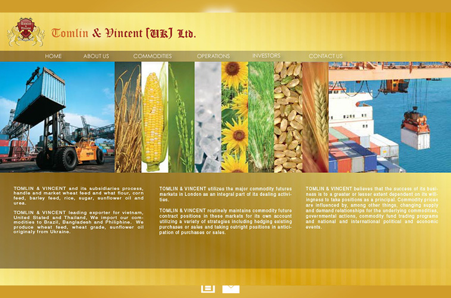
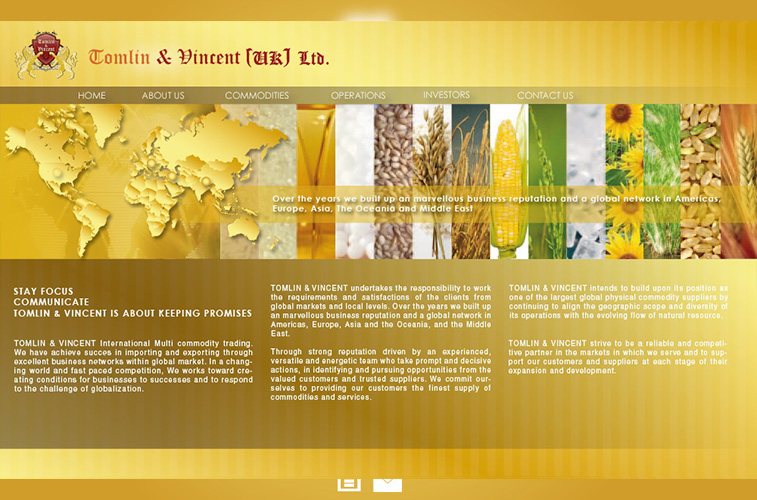
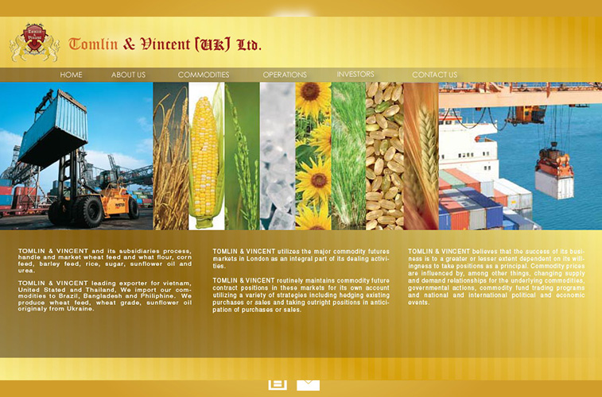
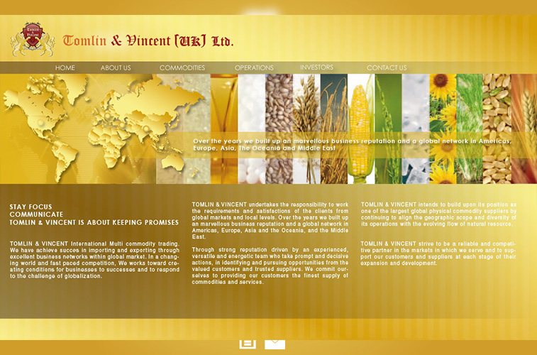
The Unpaid Projects
Kerjaan Full Flash based website yang ternyata tak berbayar! :( Client-nya sih keren dari Inggris. Iya sih dari Inggris tapi orang India-Inggris. Ya namanya juga Indihe...
Full Flash based website which never paid! Hmmmm.... the Indian English client......
Here are the preview links:


 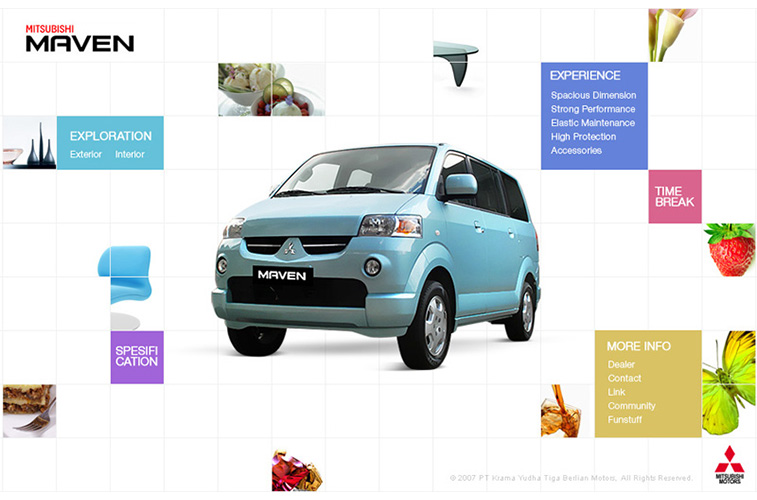
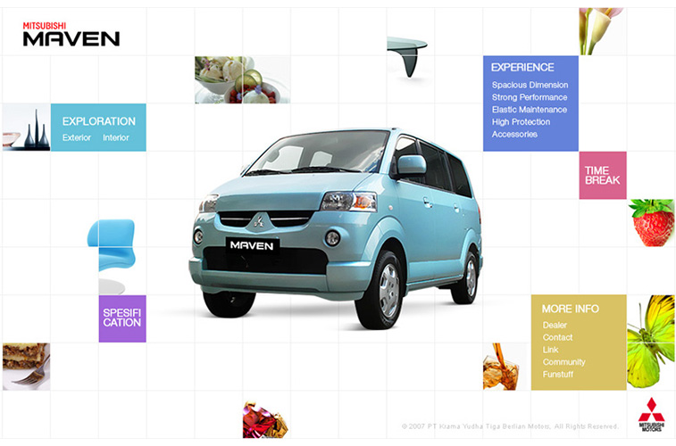
Flash based website
Adobe Flash (formerly called Macromedia Flash and Shockwave Flash) is a multimedia and software platform used for creating vector graphics, animation, browser games, rich Internet applications, desktop applications, mobile applications and mobile games. Flash displays text, vector and raster graphics to provide animations, video games and applications. It allows streaming of audio and video, and can capture mouse, keyboard, microphone and camera input.
The ActionScript programming language allows creation of interactive animations, video games, web applications, desktop applications and mobile applications. Flash software can be developed using an IDE such as Adobe Flash Professional, Adobe Flash Builder, FlashDevelop and Powerflasher FDT. Adobe AIR enables full-featured desktop and mobile applications to be developed with Flash, and published for Microsoft Windows, Mac OS X, Google Android, and iOS
In the early 2000s, Flash was widely installed on desktop computers, and was commonly used to display interactive web pages, online games, and to playback video and audio content. In 2005, YouTube was founded by former PayPal employees, and it used Flash Player as a means to display compressed video content on the web.
Between 2000 and 2010, numerous businesses used Flash-based websites to launch new products, or to create interactive company portals. After Adobe introduced hardware-accelerated 3D for Flash (Stage3D), Flash websites saw a growth of 3D content for product demonstrations and virtual tours.
So here are some highlight of works that use this technology in my entire website development.


 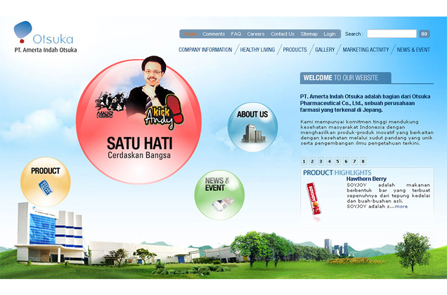
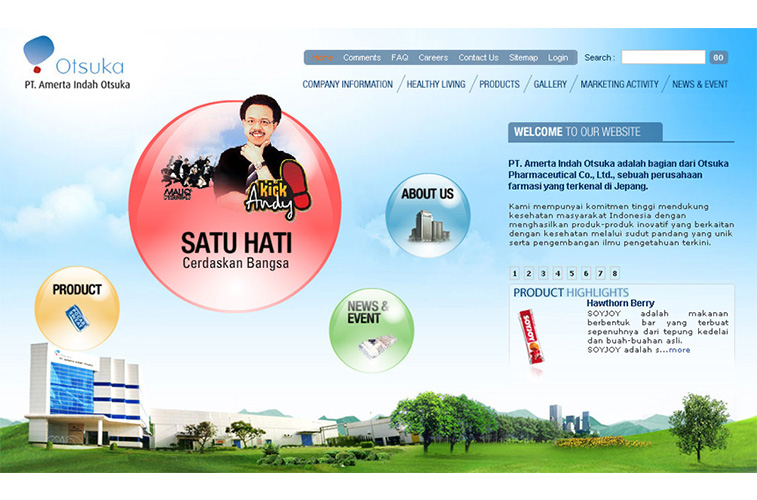


The Sammies
SAM Design, web house company yang menjadi impian sejak saya mulai mengenal dunia web. Good people. Bad management.
SAM Design, web house company that became my dream since I began to know the world wide web. Good people. Bad management.
Here are some highlights of my creation when I was there:
 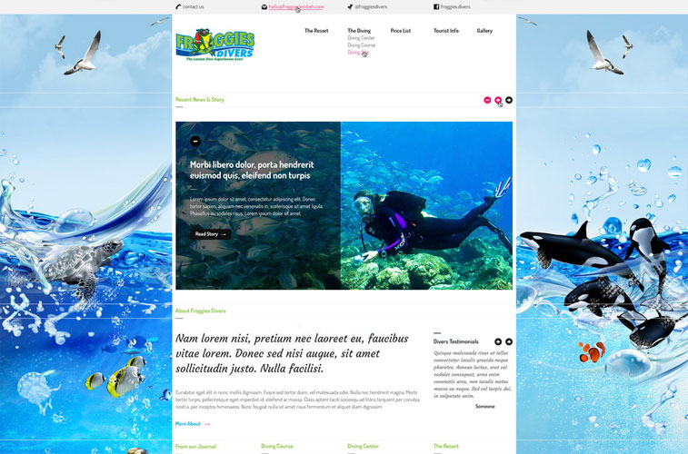
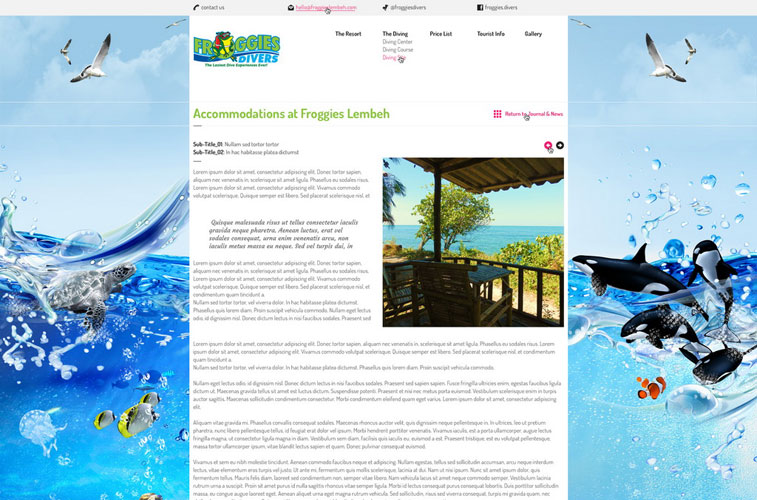
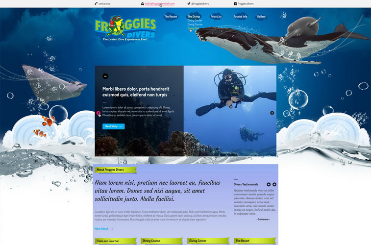
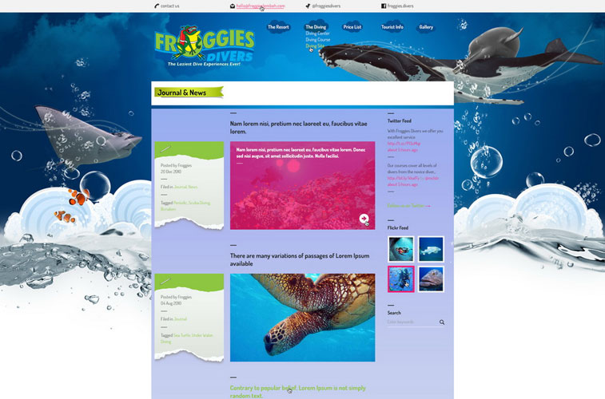
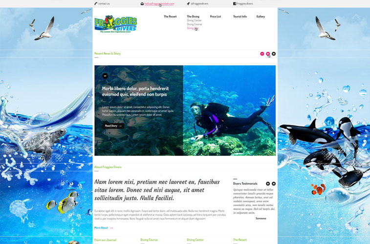
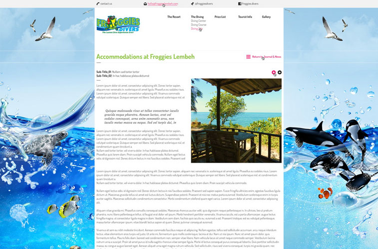
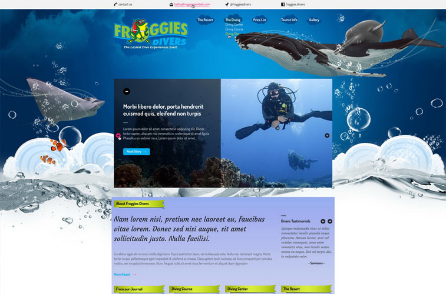
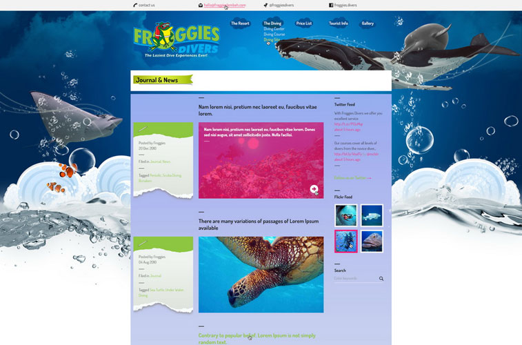

 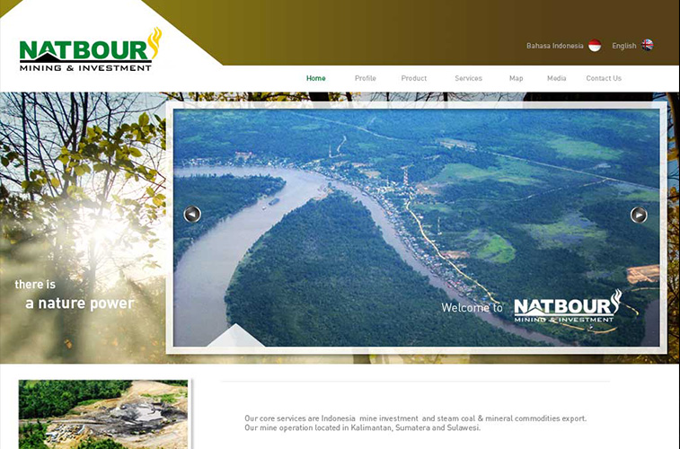
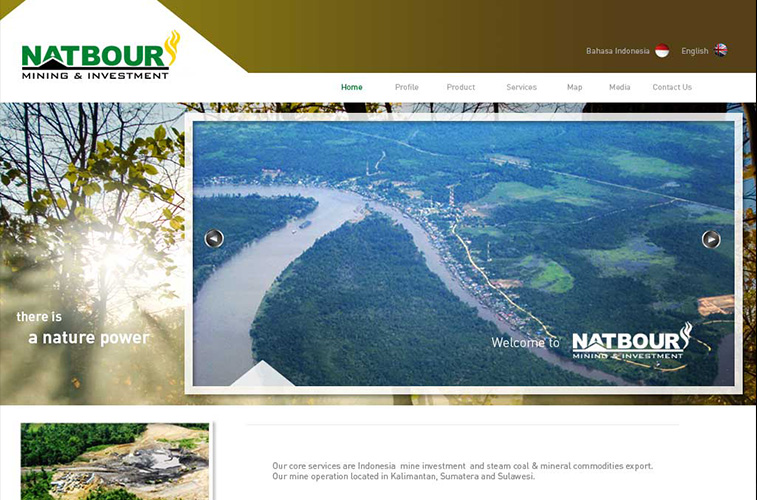

 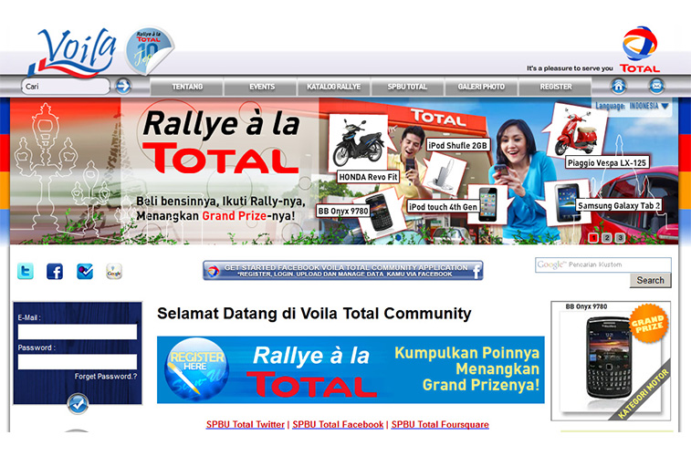
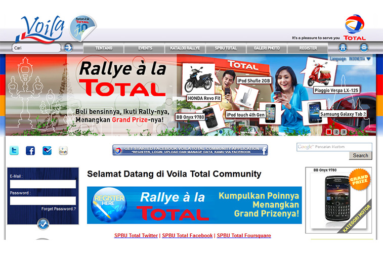
The Personals
Beberapa kerjaan yang lumayan banget buat nambah-nambahin uang buat DP kredit Ferrari! :)
Some personal projects that help me through to make a living. Sgghhh.... TAI!!!
Here are some highlights of my creation when I was there:
- Bobo Fair 2013
- Froggies Lembeh
- The Central Place
- Intersection
- Natbour Group
- Razio Mining
- Realcon Real Estate
- Voila TOTAL
 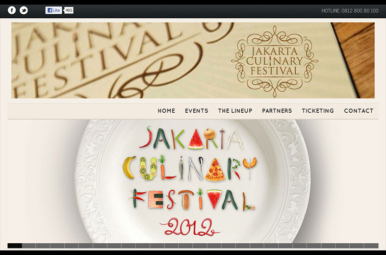
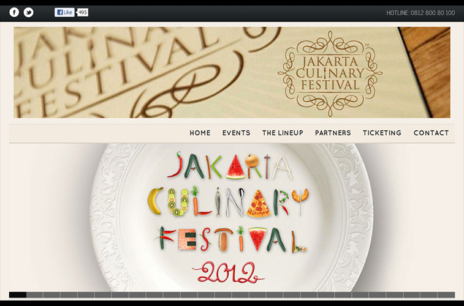
The Ismaya
Here are some highlights of my creation when I was there:

 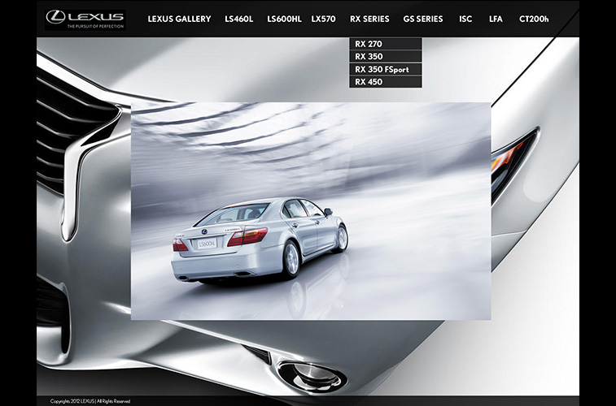
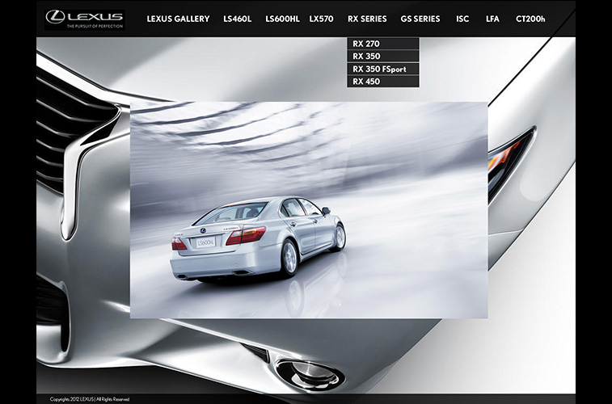
Lexus
Along with Suitmedia, I design the informative interactive catalogue for their new launching Lexus variant in Indonesia. I like the idea of a simple and clean design that informs what is Lexus, who make it and where you can get it.
The hard work give great results, these are some of them:
- LEXUS Interactive Catalogue.
GMF - Garuda Indonesia
This was a interesting project because we never have been worked in a government project. I recieve a lot of CD's from them with tons of promotional art with great assets like the aircraft photos used for this project. We make all the wireframing from scratch, using Maya, giving shape to the model and set a soft and cute motion art direction using Flash and Director.
This project was developed during my engrave season.... :(

ICS 2012
Indonesia Cellular Show 2012, brand new promotion video teaser. Client need a fresh image what includes their roots and, at the same time, a edgy products offer. Along with V2WERKS, I develope the video and the motion direction, art and navigation design do by V2WERKS.
Jasa Marga
The most demanding government client, set for JASA MARGA Annual Report & Company Profile. This project was developed on my work season in SAM Design.
Le Grandeur
This is the personal project made for Le Grandeur Hotel, Jakarta.

Bank Mandiri
Proposal board set for Bank Mandiri company profile.

N2N Indoexchange
Made using Macromedia Director